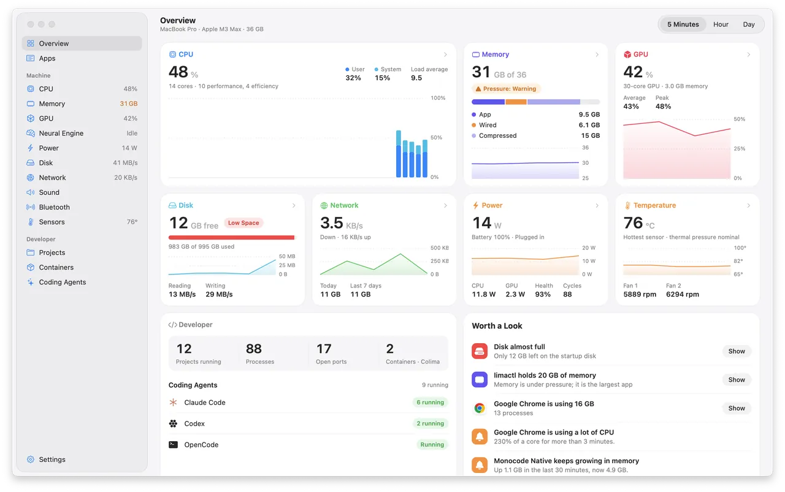
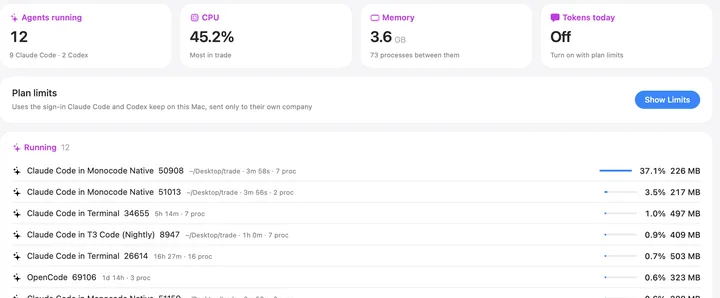
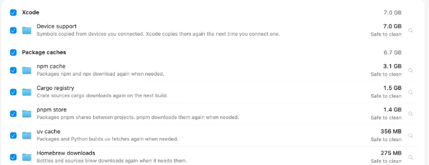

Overview
CPU, memory, GPU, disk, network, power and temperature, each with the last few minutes, hour or day. Why Is It Slow? names what is holding the Mac back.
Wisp is a free, open-source system monitor for macOS. It groups processes by app and shows what each app uses: CPU, memory, GPU, power, disk and network.

CPU, memory, GPU, disk, network, power and temperature, each with the last few minutes, hour or day. Why Is It Slow? names what is holding the Mac back.
Processes are grouped under the app that owns them. Its drawer shows the browser tabs, GPU process and extensions inside, its GPU time and last hour, and Quit or Force Quit.
Show CPU, memory, network, disk, GPU, temperature, power or battery as text or a small graph. Click it for a dashboard with every core and the busiest apps.
Menu bar only, measured side by side on the same M3 Max over the same 90 seconds
0.4%
Of one core, about half of what Vitals uses
19MB
About a twelfth of what Vitals uses
With a window open, Wisp uses about 3% CPU and 50 to 60 MB, Vitals 5 to 6% and 245 to 450 MB
A page for every part of the Mac, and for the dev servers, containers and coding agents you leave running.
Claude Code, Codex, Gemini CLI and more: the folder each one works in, its CPU and memory, and your plan limits if you turn them on.

Each part gets a page with a live, hour and day chart.
Plus Sound, Bluetooth and Sensors.
Caches, build folders, simulators, large files and what deleted apps left behind, sent to the Trash after you review them. Uninstall an app with its files in ~/Library.

Dev servers and their ports, with idle ones marked. Docker, OrbStack and Colima containers too, without the CLI.
A notification when an app uses a full core for minutes or keeps growing in memory.
Read the same numbers from Terminal, or hand them to your coding agent.
MIT licensed. Wisp doesn't run anything as root and keeps a year of per-app history on your Mac.
brew install --cask current/tap/wisp
macOS 15 or later on Apple silicon